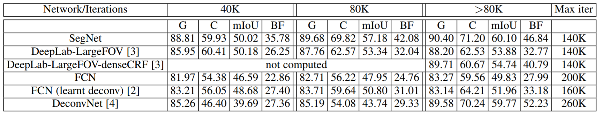

Fully Convolutional Networks
Nikhil Sardana
December 2017
Introduction
Introduction
A traditional convolutional network has multiple convolutional layers, each followed by pooling layer(s), and a few fully connected layers at the end. These standard CNNs are used primarily for image classification. This lecture covers Fully Convolutional Networks (FCNs), which differ in that they do not contain any fully connected layers. This lecture is intended for readers with understanding of traditional CNNs. We will explore the structure and purpose of FCNs, along with their application to semantic segmentation.
Semantic Segmentation
We’ve previously covered classification (without localization). Later lectures will cover object detection and instance segmentation. The main difference between semantic segmentation and instance segmentation is that we make no distinction between the instances of a particular class in semantic segmentation. We simply wish to classify every single pixel.

How can we adapt convolutional networks to classify every single pixel? Clearly, we could take a small crop of the original image centered around a pixel, use the central pixel’s class as the ground truth of the crop, and run the crop through a CNN. However, we would need a crop for every single pixel in an image, and this would be hopelessly slow. What if we could classify every single pixel at once? Enter Fully Convolutional Networks.
Network Architecture
What if we just remove the pooling layers and fully connected layers from a convolutional network? Then, at the end, we could have a layer with depth \(C\), where \(C\) is the number of classes. We can choose a filter size and stride length to maintain our original image width \(W\) and height \(H\) throughout the entire network, so we could simply make our loss function a sum of the cross-entropy loss for each pixel (remember, we are essentially performing classification for each pixel). Refer to the diagram below for a visual representation of this network.

Obviously, this network will run far quicker than simply classifying each pixel individually. However, it is still too computationally expensive. Using the original input image size throughout the entire network would be extremely expensive (especially for deep networks). Thus, we need a way to downsample the image (just like in a standard convolutional network), and then, upsample the layers back to the original image size.

The above diagram shows a fully convolutional network. The first half is identical to the Convolutional/Pooling layer structure that makes up most of traditional CNN architecture. Through pooling and strided convolutions, we reduce the size of each layer, reducing computation. However, instead of having fully connected layers (which are at the end of normal CNNs), we have \(1\times1\) convolutional layers.
1\(\times\)1 Convolutions
It is important to realize that \(1\times1\) convolutional layers are actually the same thing as fully connected layers. Think about it. In the traditional CNN below, how exactly do we get from the \(5\times5\) layer to the first fully connected layer?

It’s simple! The first fully connected layer is simply a convolutional layer with a \(5\times5\) kernel. If it’s still unclear, here’s an example with numbers: \[\begin{bmatrix} 1 & 2 & 3 & 1 & 3\\ 4 & 5 & 6 & 1 & 2\\ 7 & 8 & 9 & 1 & 4\\ 2 & 1 & 3 & 5 & 4\\ 2 & 4 & 2 & 1 & 1\\ \end{bmatrix} * \begin{bmatrix} 2 & 2 & 2 & 2 & 2\\ 2 & 2 & 2 & 2 & 2\\ 2 & 2 & 2 & 2 & 2\\ 2 & 2 & 2 & 2 & 2\\ 2 & 2 & 2 & 2 & 2\\ \end{bmatrix} = \begin{bmatrix} 164\\ \end{bmatrix}\]
That single number, \(164\), would become the value of a single neuron in the first fully connected layer. For each \(5\times5\) feature map, we have a \(5\times5\) kernel, and generate a neuron in the first fully connected layer. You can think of all the other fully connected layers as just stacks of \(1\times1\) convolutions (with \(1\times1\) kernels, obviously).
Of course, you ask, if fully connected layers are simply \(1\times1\) convolutional layers, then why don’t all CNNs just use \(1\times1\) convolutional layers at the end, instead of fully connected layers?
Simply put, newer networks do. Sometimes, older networks like VGG16 have their fully connected layers reimplemented as conv layers (see SSD). Any MLP can be reimplemented as a CNN. For example, a standard NN with \(n\) inputs is also a convolutional network with an input of a single pixel, and \(n\) input channels.
There is, however, one very important difference between a fully convolutional network and a standard CNN. Consider the standard convolutional network above. Note how a fully connected layer expects an input of a particular size. This restricts our input image to a fixed size. A fully convolutional network has no such issues. Since no fully connected layers exist, our input can be of any size.
Unpooling
We now understand the first half of the network (including the \(1\times1\) convolutional layers). The question remains: How do we increase layer size to reach the dimensions of the original input? One way we can upsample is by unpooling.

There are multiple approaches to unpooling. One approach is “Nearest Neighbor", we simply repeat every element. “Bed of Nails" unpooling simply places the value in a particular position in the output, filling the rest with zeros. The above example places the input values in the upper left corner.

Max Unpooling is a smarter “bed of nails" method. Rather than a predetermined, fixed location for the “nails", we use the position of the maximum elements from the corresponding max pooling layer earlier in the network. This works because Fully Convolutional Networks are often symmetric, and each convolutional and pooling layer corresponds to a transposed convolution (also called deconvolution) and unpooling layer.
Transposed Convolution
Strided convolutions allow us to decrease layer size in a learnable fashion. Pooling is a fixed function, however, we learn the weights of a convolutional layer, and thus a strided convolution is more powerful than a pooling layer. Strided convolutions are to pooling layers what transposed convolutions are to unpooling layers.
You will often hear transposed convolution referred to as deconvolution. Deconvolution suggests the opposite of convolution, however, a transposed convolution is simply a normal convolution operation, albeit with special padding.


In the figure above left, we get from a \(5\times5\) layer (blue) to a \(2\times2\) layer (green) by performing a convolution with filter size \(3\), and stride \(2\). With some fancy padding in the transposed convolution, we achieve the opposite: \(2\times2\) to \(5\times5\). Thus, transpose convolutions allow us to increase our layer size in a learnable fashion, since we can change the weights through backpropagation.
We can clearly see that we will not end up with our original \(5\times5\) values if we perform the normal convolution, and then the transpose convolution. The transpose convolution is not the inverse of a convolution, and thus deconvolution is a terrible name for the operation.
Now we have covered both ends of the Fully Convolutional Network. We begin with a standard CNN, and use strided convolutions and pooling to downsample from the original image. Then, we upsample using unpooling and transposed convolutions. Finally, we end up with a \(C\times H \times W\) layer, where \(C\) is the number of classes, and \(H\) and \(W\) are the original image height and width, respectively. Thus, we get a prediction for each pixel, and perform semantic segmentation.
Skip Connections
“Fully Convolutional Networks for Semantic Segmentation" by Long et al. introduced the idea of skip connections into FCNs to improve segmentation accuracy. (It also popularized FCNs as a method for semantic segmentation).
Upsampling using transposed convolutions or unpooling loses information, and thus produces coarse segmentation. Skip connections allow us to produce finer segmentation by using layers with finer information.
Skip connections combine the coarse final layer with finer, earlier layers to provide local predictions that “respect" global positions. Refer to the figure below for a diagram of the skip connection architecture.
To create FCN-16s, the authors added a \(1\times1\) convolution to pool4 to create class predictions, and fused these predictions with the predictions computed by conv7 with a \(2\times\) upsampling layer. For FCN-8s, they added a \(2\times\) upsampling layer to this output, and fused it with the predictions from a \(1\times1\) convolution added to pool3.

The figure below left shows that FCN-16s provides much finer segmentation than the standard FCN-32s, and FCN-8s even finer segmentation (much closer to ground truth). The accuracy table below right quantifies the segmentation improvement from skip connections.


Further Work in Semantic Segmentation
It should be noted that to max unpooling with saved indices we cover in Section 3.2 was not introduced in the FCN paper above, but rather a later paper called SegNet.


Not unsurprisingly, SegNet performed better than standard FCNs with skip connections. Nevertheless, SegNet has been surpassed numerous times by newer papers using dialated convolutions, spatial pyramid pooling, and residual connections. We will cover these in a later lecture dedicated to semantic segmentation.

Acknowledgements
None of the diagrams were created by me.
{kind=link}